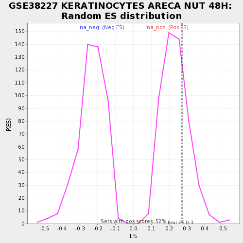

| | | Dataset | testA |
| Phenotype | NoPhenotypeAvailable |
| Upregulated in class | na_pos |
| GeneSet | GSE38227 KERATINOCYTES ARECA NUT 48H |
| Enrichment Score (ES) | 0.27239323 |
| Normalized Enrichment Score (NES) | 1.1682489 |
| Nominal p-value | 0.26153848 |
| FDR q-value | 0.7872938 |
| FWER p-Value | 1.0 |
Table: GSEA Results Summary
 Fig 1: Enrichment plot: GSE38227 KERATINOCYTES ARECA NUT 48H
Fig 1: Enrichment plot: GSE38227 KERATINOCYTES ARECA NUT 48H
Profile of the Running ES Score & Positions of GeneSet Members on the Rank Ordered List

Fig 2: GSE38227 KERATINOCYTES ARECA NUT 48H: Random ES distribution
Gene set null distribution of ES for GSE38227 KERATINOCYTES ARECA NUT 48H